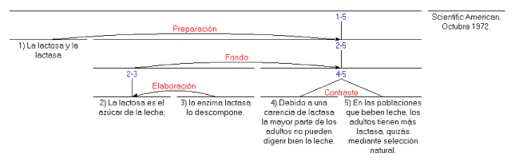
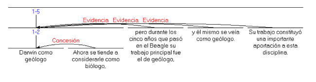

INTRODUCCIÓN A LA TEORÍA DE LA ESTRUCTURA RETÓRICA
 |
|
INTRODUCCIÓN A LA TEORÍA DE LA ESTRUCTURA RETÓRICA (RHETORICAL STRUCTURE THEORY: RST) Historia La RST tiene su origen en estudios sobre la generación automática de textos. Un equipo de investigadores en el Instituto de Ciencias de la Información (Information Sciences Institute ), en la Universidad del Sur de California, trabajaba en la autoría de textos mediante computadora. Hacia 1983 parte del equipo (Bill Mann, Sandy Thompson y Christian Matthiessen) observaron que no existía ninguna teoría de la estructura o la función del discurso que aportara el suficiente detalle para programar un generador automático de textos. En respuesta a esta carencia, se concibió la RST a partir de estudios de textos editados o preparados, procedentes de una amplia variedad de fuentes. En la actualidad, la teoría tiene validez y consideración dentro de la lingüística independientemente de sus usos computacionales.
En el uso cotidiano, un texto exhibe una unidad que no se encuentra presente en recopilaciones arbitrarias de oraciones. La RST ofrece una explicación de la coherencia del texto. Pero, ¿qué es la coherencia? Una formulación de la coherencia propone que es la ausencia de secuencias ilógicas y de lagunas. En otras palabras, cada parte de un texto coherente tiene una función --una razón verosímil o aceptable para su existencia-- evidente a los lectores, y, además, produce la impresión de que no le falta nada. La RST enfatiza la primera parte, la idea de que cada parte tiene un papel evidente en el texto.
La RST se centra en la descripción del texto, y no en procedimientos de su creación o comprensión. Propone una serie de posibles estructuras --diferentes tipos de unidades fundamentales que son observables en un texto-- que pertenecen a dos niveles diferentes. El primer nivel comprende la "nuclearidad" y las "relaciones" (éstas a menudo reciben el nombre de relaciones de coherencia en lingüística). No nos ocupamos aquí del segundo nivel de unidades, los esquemas .
El esquema estructural más frecuente es el de dos unidades de texto (adyacentes casi siempre, aunque existen excepciones) relacionadas de tal manera que una de ellas tiene un papel específico con respecto a la otra. Un ejemplo es el de una aserción seguida de la evidencia para tal afirmación. La RST establece una relación de "Evidencia" entre las dos unidades. La relación también establece que la aserción es más esencial en el texto que la evidencia, de tal manera que la aserción se convierte en el núcleo de la relación, y la evidencia en su satélite. No hay reglas absolutas con respecto al orden de las unidades núcleo y satélite, aunque en la mayor parte de las relaciones se puede encontrar un orden preferido. Existen otros pares de unidades de similares características:
A partir simplemente de estas relaciones, podemos realizar el análisis de un texto. A continuación se incluyen el título y el resumen del principio de un artículo de la revista Scientific American (traducido). El resumen se ha dividido en unidades numeradas para el análisis. 
El proceso de análisis proporciona un procedimiento estructurado y definido para explicar parte de los elementos que intervienen en la comprensión de un texto. El o la analista (al que generalmente se denomina observador en los artículos sobre RST) afirma que, desde su punto de vista, las primeras dos unidades (las que explican los términos lactosa y lactasa) se encargan de facilitar la comprensión del resto del texto. Además, el analista afirma que la unidad número 2 proporciona detalle adicional sobre el tema (o, en general, sobre la situación) que se presenta en la unidad número 1. También se establece que las unidades 3 y 4 se encuentran en una relación neutra de contraste. Todas estas observaciones se formulan en términos de la intención del autor, de modo que, por ejemplo, se postula que el autor pretendía que el lector reconociera que las situaciones expresadas en las unidades 3 y 4 son similares en muchos aspectos, pero diferentes en un aspecto en concreto que el autor desea señalar. La teoría no impone sobre el observador u observadora la necesidad de encontrar un papel estructural para cada elemento del texto. Sin embargo, cuando se trata de textos creados cuidadosamente, prácticamente todos los textos tienen un análisis en términos de RST que asigna un papel estructural a todos y cada uno de los elementos del texto. (En ocasiones, por razones de complejidad o de ambigüedad, el observador puede encontrar más de un análisis.)
La siguiente tabla muestra relaciones adicionales, además de las ya mencionadas arriba:
El número de relaciones no es limitado, pero las relaciones expuestas más arriba, y definidas en Mann y Thompson 1988 (que es por el momento el artículo definitivo sobre la RST) han sido útiles para diferentes propósitos.
Además del frecuente esquema de núcleo y satélite, existen relaciones sin un único núcleo. Un ejemplo es la relación Contraste, como ya vimos más arriba. Estas relaciones se denominan multinucleares, y son:
El propósito de la RST es facilitar el análisis de textos. Existe una convención gráfica para expresar las estructuras de un texto, pero las relaciones que se observan en un texto se hacen explícitas principalmente a través de las definiciones de las relaciones y otras estructuras de la RST. La extensión del inventario inicial de relaciones es posible cuando el inventario con el que se está trabajando no es adecuado. ¿Qué es realmente un análisis? Es un medio simbólico mediante el cual un lector informado sobre la teoría puede explicar la unidad, conexión y coherencia de cualquier monólogo escrito, a través de afirmaciones explícitas. Cada relación tiene una definición. La definición especifica aquello que el lector de un texto debe juzgar como verdadero con el fin de establecer la relación en cuestión entre dos unidades de un texto. A continuación se presenta, en forma abreviada, una definición típica de la relación Condición. La definición ilustra la definición en concreto, pero también el formato general para todas las definiciones. La definición puede ser aplicada de forma sistemática por un observador u observadora , el nombre que recibe el analista en la RST.
Dado que el efecto nunca se encuentra vacío, todas las observaciones o conclusiones del observador en una relación atribuyen una intención al autor con respecto a las unidades de texto unidas por la relación. Y dado que un análisis que atribuye un papel a cada unidad también atribuye una intención, tenemos pues una razón de existencia para cada elemento del texto. Un observador examina el texto y encuentra combinaciones consistentes de unidades y de relaciones (o de otras estructuras) que comprenden el texto entero. Un texto puede tener más de un análisis, bien porque el observador encuentra ambigüedad, o bien porque piensa que la intención del autor se explica mejor mediante una combinación de diferentes análisis. Esta combinación, probablemente, no podrá ser representada mediante una estructura de árbol, pero las combinaciones en sí son infrecuentes. La "forma abreviada" mencionada arriba al introducir la definición pretende hacer evidente el carácter epistemológico de las observaciones. En cada una de las conclusiones del observador que se presentan, la expresión completa sería "Es verosímil o creíble desde el punto de vista del observador que fue verosímil desde el punto de vista del autor que escribió el texto que <la conclusión> es cierta." La principal motivación para la organización y detalle de las definiciones fue la de permitir el proceso de observación en todos los casos.
Este es un ejemplo de análisis, un resumen de un artículo en la revista Scientific American de mayo de 1986, titulado "Darwin como geólogo" (traducido). Para el análisis, el texto se ha dividido en cinco unidades, desde un punto de vista sintáctico, e incluyendo el título como una unidad más. 1) Darwin como geólogo 2) Ahora se tiende a considerarle como biólogo, 3) pero durante los cinco años que pasó en el Beagle su trabajo principal fue el de geólogo, 4) y él mismo se veía como geólogo. 5) Su trabajo constituyó una importante aportación a esta disciplina. A continuación se encuentra el diagrama en términos de RST: 
La tabla a continuación muestra las afirmaciones del observador al establecer la primera relación de Evidencia en el texto sobre Darwin:
Estas afirmaciones, junto con las de las otras dos relaciones de Evidencia y la relación de Concesión, constituyen un grupo de aproximadamente 16 afirmaciones, y son esencialmente equivalentes al diagrama. La posibilidad de hacer explícitas las afirmaciones del análisis permite la comparación de análisis basados en RST con otros análisis, siempre y cuando los otros análisis sean lo suficientemente explícitos.
Con excepción de la forma explícita del análisis, el observador se encuentra en una posición similar a la del lector del texto. Las relaciones que le parecen verosímiles al observador serán, en general, verosímiles también para el lector. Las relaciones, y también las cláusulas del texto, tienen contenido comunicativo propio. Por ejemplo, tomemos la idea de que dado que Darwin contribuyó de manera significativa a la geología, podemos tomar este hecho como evidencia de que Darwin trabajó como geólogo. La idea de evidencia no se hace explícita en ningún lugar del texto, sin embargo se comunica a través del texto. Si cambiáramos el texto de manera que negara la idea de que su contribución es evidencia de que Darwin trabajó como geólogo, el texto resulta incoherente, pero no contradictorio. La idea de la evidencia, expresada de manera implícita, es parte del contenido comunicativo del texto. En varios artículos sobre la RST, fundamentalmente entre 1985 y 1992, estas contribuciones implícitas se denominan "proposiciones relacionales" (relational propositions). La comunicación implícita contribuye en gran manera a la posibilidad de "leer entre líneas", la posibilidad de que es frecuente encontrar comunicación implícita al leer un texto.
Dado que la RST generalmente establece un análisis para cualquier texto escrito cuidadosa y coherentemente, y dado que dicho análisis avanza una explicación motivada de porqué el autor incluyó cada elemento en el texto, la RST proporciona una explicación de la coherencia textual independiente de las formas léxicas y gramaticales del texto. Dada su especificación del papel del observador, también proporciona la base para una discusión de la objetividad y subjetividad del análisis. Además, proporciona una base funcional para el estudio de las formas específicas del texto que tienen relevancia en el discurso: los marcadores del discurso y otros marcadores formales de la estructura del discurso. Si la RST encuentra estructura dentro de una oración, se establece la base para estudiar las funciones de diferentes métodos de unión de cláusulas, y, en general, las relaciones entre estas formas de estructura discursiva y otros elementos de cohesión. Bibliografía Mann, W.C., y Thompson, S.A. 1988. Rhetorical Structure Theory: Toward a functional theory of text organization. Text, 8 (3). 243-281. |
||||||||||||||||||||||||||||||||||||||||||||||||||||||||||||||||||||||||||||||||||||||||||||||||||||||||||||||||||||||||||||||||||||||||||||||
©2005-2025 William C. Mann, Maite Taboada. All rights reserved. |
|||||||||||||||||||||||||||||||||||||||||||||||||||||||||||||||||||||||||||||||||||||||||||||||||||||||||||||||||||||||||||||||||||||||||||||||